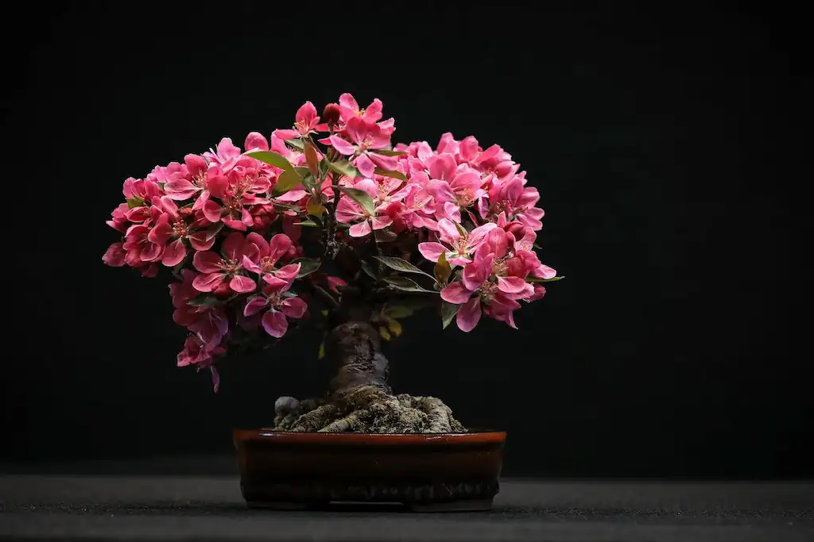
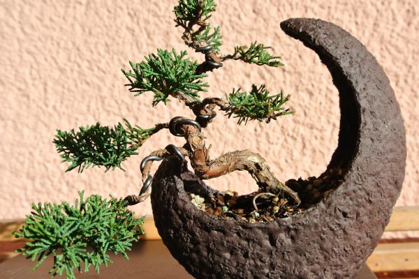

Miele
Artigianale
Dalle fioriture selvatiche della Sardegna direttamente alla tua tavola

Dalle fioriture selvatiche della Sardegna direttamente alla tua tavola

Mieli rari di Corbezzolo, Asfodelo, Cardo e Lavanda sardi

Rispetto per la biodiversità e amore per il nostro territorio sardo

Produciamo miele grezzo e naturale non pastorizzato, preservando intatti tutti i profumi, i nutrienti e i principi attivi tipici della flora del centro Sardegna.

Offriamo una ricca selezione di mieli monoflorali tipici sardi, tra cui il pregiato miele amaro di Corbezzolo, l'Asfodelo delicato e il profumato Cardo.

Proponiamo prodotti puri dell'alveare come polline fresco biologico, propoli e pappa reale, ideali per il benessere quotidiano naturale.

L'apicoltura è per noi cura del territorio,
rispetto per i cicli vitali delle api e amore per la terra sarda.

Le nostre arnie si trovano nel cuore montano e incontaminato dell'isola,
garantendo un miele puro e naturale al 100%.

Dalla cura meticolosa dell'alveare al confezionamento,
seguiamo con rigore artigianale ogni singola goccia del nostro miele sardo.
La nostra azienda agricola nasce nel cuore incontaminato della Sardegna con l'obiettivo di custodire e proteggere le api e di produrre mieli monoflorali unici. Grazie alla natura selvaggia della nostra terra, riusciamo a raccogliere nettari rari e intensi nel pieno rispetto della biodiversità e dell'ambiente.
Uniamo antichi saperi tradizionali e moderne pratiche apistiche per offrire un prodotto integro e salutare. Ogni vasetto racchiude i profumi del sole e del vento della Sardegna, regalando un'esperienza sensoriale indimenticabile a chi ama le eccellenze gastronomiche genuine.
Apicoltura Sardegna
Località Su Mele 'onu, snc
Bolondra (NU) - Sardegna
Italia
+39 345 678901
Questo sito utilizza i cookie per migliorare l'esperienza dell'utente e per offrirti servizi personalizzati. Continuando a navigare sul sito accetti l'utilizzo dei cookie. Puoi consultare qui la nostra cookie policy.